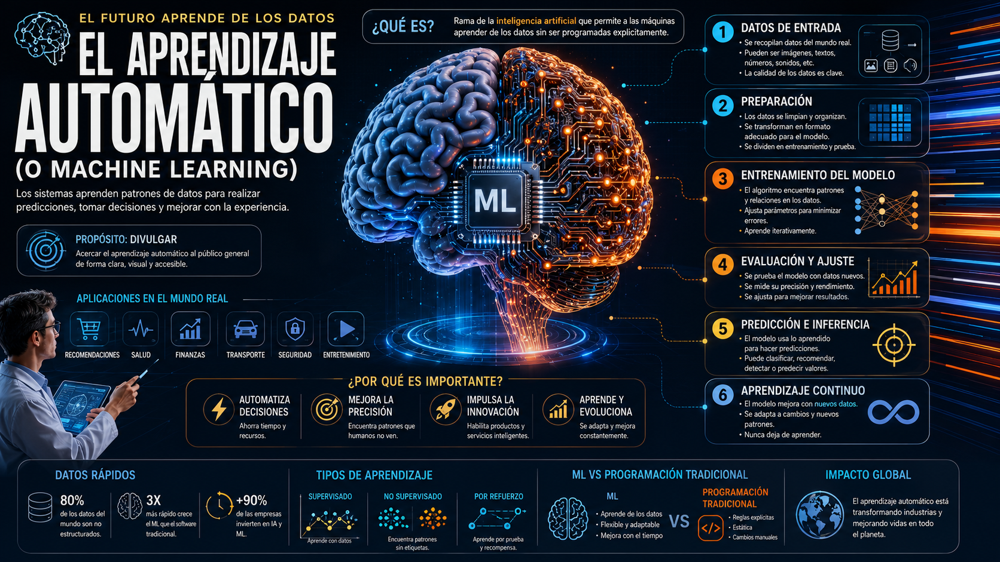
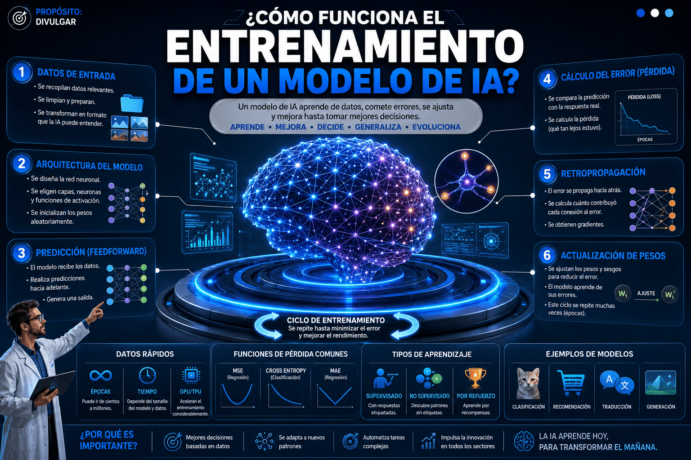
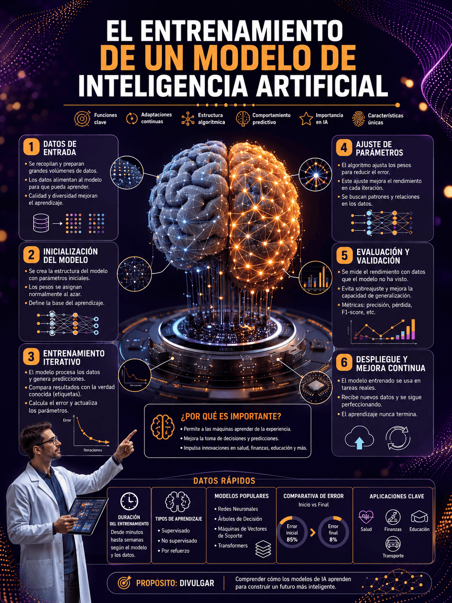
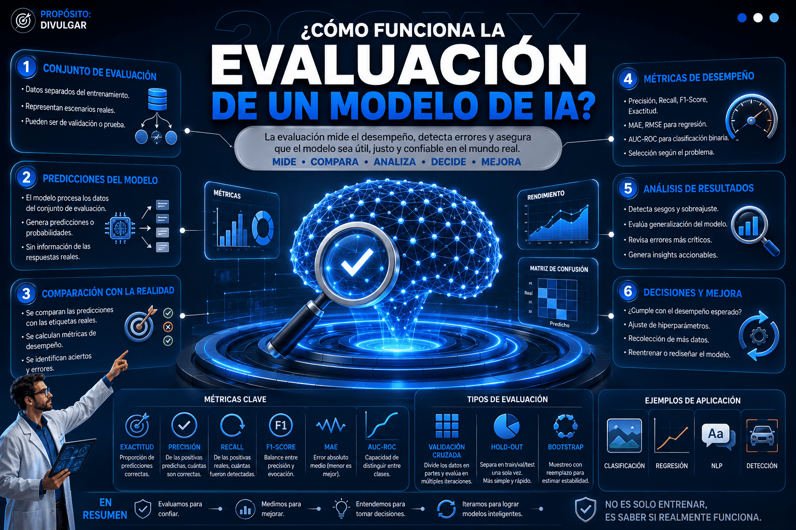
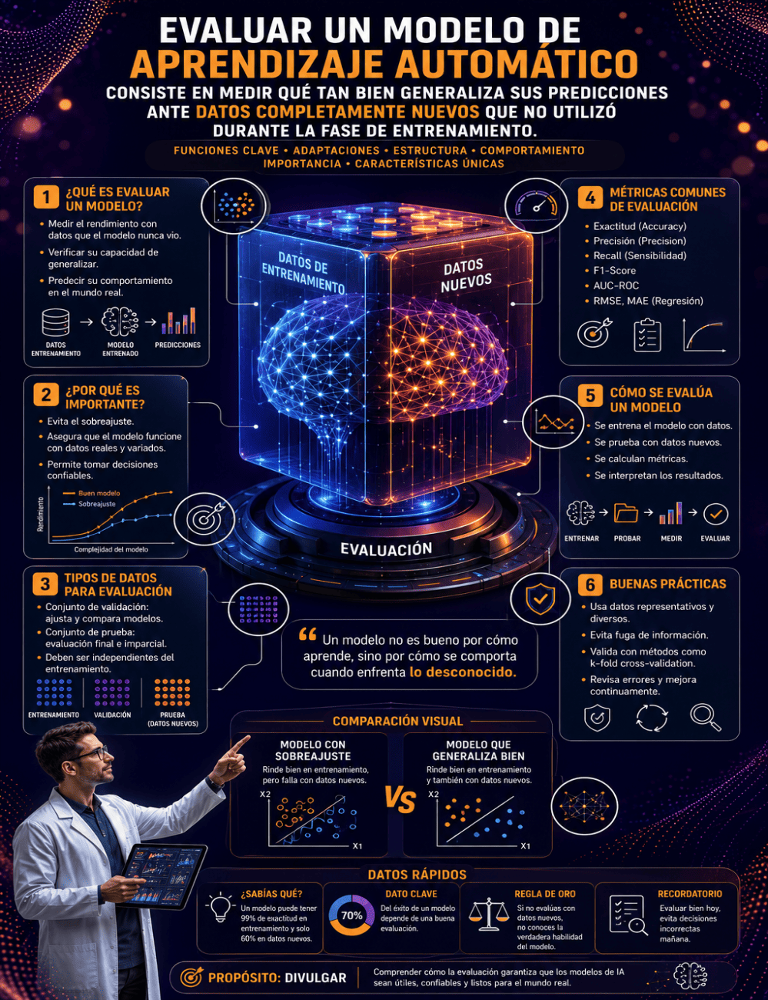
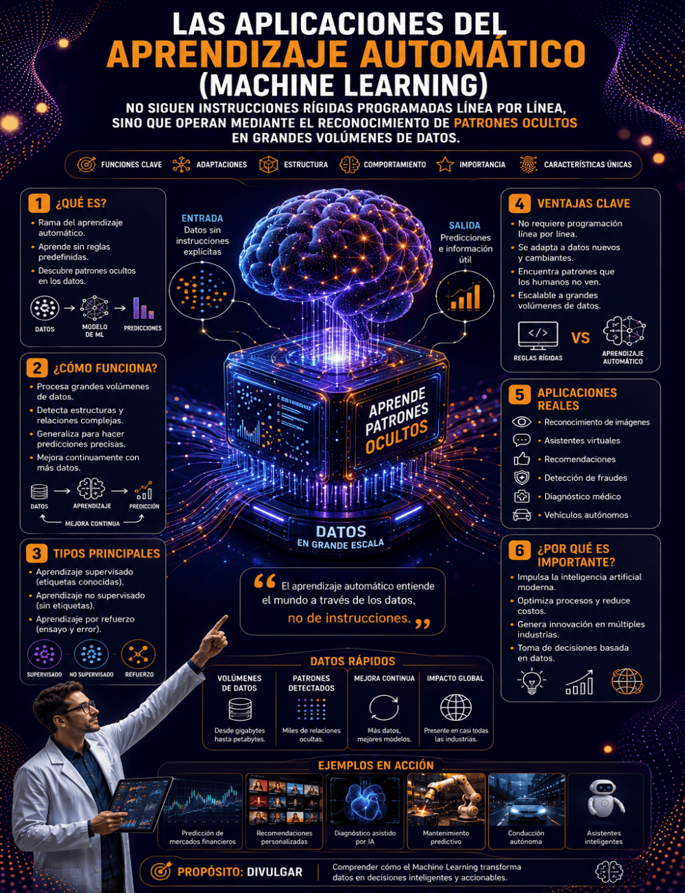

¿Cómo funciona el aprendizaje automático?
Autor:
Juan Guillermo Rivera Berrío
Código JavaScript para el libro: Joel Espinosa Longi, IMATE, UNAM.
Recursos interactivos: DescartesJS, Herramientas de IA, ChatGPT y Gemini.
Fuentes: Lato y UbuntuMono
Imagen de portada: ilustración generada por GPT Image 2
Red Educativa Digital Descartes
Córdoba (España)
descartes@proyectodescartes.org
https://proyectodescartes.org
Proyecto iCartesiLibri
https://proyectodescartes.org/iCartesiLibri/index.htm
ISBN:
Esta obra está bajo una licencia Creative Commons 4.0 internacional: Reconocimiento-No Comercial-Compartir Igual.
Vivimos en una época en la que la inteligencia artificial ha dejado de ser una tecnología reservada para laboratorios de investigación y grandes empresas para convertirse en una herramienta presente en la educación, la medicina, la industria, las finanzas, el entretenimiento y prácticamente todos los ámbitos de la vida cotidiana. Sin embargo, detrás de conceptos como aprendizaje automático, redes neuronales o modelos de inteligencia artificial existen principios científicos y matemáticos que con frecuencia parecen complejos o inaccesibles para quienes se acercan por primera vez a este fascinante campo.
Este libro nace precisamente con el propósito de acercar ese conocimiento a cualquier lector curioso.
¿Cómo funciona el aprendizaje automático? forma parte de la colección "¿Cómo funciona?", una serie de libros concebida para explicar, de manera clara, rigurosa y visual, el funcionamiento de tecnologías, fenómenos científicos, disciplinas y procesos que transforman nuestro mundo. Cada volumen de la colección parte de una pregunta sencilla —"¿Cómo funciona...?"— y la responde mediante explicaciones progresivas, ejemplos cotidianos, ilustraciones, recursos interactivos y un lenguaje accesible, sin renunciar al rigor científico.
La filosofía de esta colección consiste en ir más allá de la simple descripción de los conceptos. Nuestro objetivo es revelar los mecanismos internos que hacen posible cada tecnología, comprender por qué funciona y descubrir cómo sus diferentes componentes interactúan entre sí. Creemos que entender el funcionamiento de las cosas es el primer paso para utilizarlas de forma crítica, creativa y responsable.
En este libro, el lector recorrerá el camino que sigue una máquina para aprender a partir de los datos. Descubrirá cómo los algoritmos
identifican patrones, cómo se entrenan los modelos, cuáles son las diferencias entre el aprendizaje supervisado, no supervisado y por refuerzo, cómo funcionan las redes neuronales, de qué manera se evalúa el rendimiento de un modelo y cuáles son las aplicaciones que hoy están transformando múltiples sectores de la sociedad. Finalmente, explorará las tendencias que marcarán el futuro del aprendizaje automático y los desafíos científicos, tecnológicos y éticos que acompañarán su evolución.
Como todos los libros de la colección "¿Cómo funciona?", esta obra incorpora abundantes recursos visuales e interactivos que enriquecen la experiencia de aprendizaje. Las ilustraciones, diagramas, simulaciones y actividades permiten experimentar con los conceptos, facilitando una comprensión más profunda y favoreciendo un aprendizaje activo. El objetivo no es únicamente leer sobre el aprendizaje automático, sino también observarlo, explorarlo e interactuar con él.
Esperamos que este libro despierte nuevas preguntas, estimule la curiosidad científica y motive a seguir aprendiendo. Porque comprender cómo funciona una tecnología es también comprender mejor el mundo que estamos construyendo y prepararnos para participar activamente en su transformación.
Bienvenido a la colección "¿Cómo funciona?".
Esperamos que este sea solo el primero de muchos viajes para descubrir, comprender y disfrutar el extraordinario funcionamiento de la ciencia y la tecnología.
Juan Guillermo Rivera Berrío
2026
El aprendizaje automático (o Machine Learning) es una rama de la inteligencia artificial que transforma la manera en que las computadoras resuelven problemas complejos. A diferencia de la programación tradicional, donde un desarrollador escribe reglas lógicas explícitas paso a paso, el aprendizaje automático permite que los sistemas identifiquen patrones de manera autónoma a partir de datos históricos. En esencia, el principio de funcionamiento busca encontrar una función matemática desconocida $f$ que mapee un conjunto de variables de entrada $X$ hacia una salida deseada $Y$:
$$Y = f(X)$$
Mediante esta formulación, el algoritmo adapta sus propios parámetros para aproximar la función $f$ sin ser programado específicamente para cada escenario.
Para lograr esta adaptación, los procesos internos del aprendizaje automático se estructuran en torno a tres componentes principales: los datos de entrenamiento, un modelo predictivo y una función de costo o pérdida. Durante la fase de entrenamiento, el modelo toma las entradas y genera una estimación $\hat{y}$. A continuación, el sistema evalúa qué tan distante está su predicción del valor real $y$ mediante la función de pérdida, como el error cuadrático medio:
$$L(\theta) = \frac{1}{n} \sum_{i=1}^{n} (y_i - \hat{y}_i)^2$$A través de un algoritmo de optimización (como el descenso de gradiente), el modelo ajusta recursivamente sus parámetros internos $\theta$ para minimizar el valor de $L(\theta)$, mejorando gradualmente su precisión a medida que procesa más información.
Este flujo de trabajo ha dado lugar a múltiples aplicaciones prácticas y casos reales que utilizamos a diario. Entre los ejemplos más destacados se encuentran:
Sistemas de recomendación: Plataformas como Netflix o Spotify analizan patrones de consumo masivos para predecir qué contenido ofrecer a cada usuario.
Diagnóstico médico: Algoritmos de visión por computadora procesan imágenes médicas (como resonancias o radiografías) para detectar patologías en etapas tempranas.
Procesamiento de lenguaje natural: Asistentes virtuales y traductores automáticos interpretan el contexto gramatical para generar respuestas coherentes.
Entre sus principales beneficios y ventajas, destaca la capacidad de automatizar la toma de decisiones en entornos altamente dinámicos y procesar grandes volúmenes de datos en múltiples dimensiones, algo imposible de realizar manualmente. Además, los modelos son capaces de adaptarse a nuevos datos de forma continua, mejorando su desempeño con el tiempo sin necesidad de reescribir la arquitectura base del software.
No obstante, esta tecnología presenta desafíos y limitaciones significativos. Los modelos son altamente dependientes de la calidad de los datos recibidos; si los datos de entrenamiento contienen sesgos o errores, el algoritmo replicará y amplificará esas deficiencias. Asimismo, existe el riesgo del sobreajuste (overfitting), un fenómeno donde el modelo memoriza perfectamente los datos de entrenamiento pero pierde la capacidad de generalizar ante datos nuevos, sumado a la falta de interpretabilidad en modelos complejos, comúnmente conocidos como "cajas negras".
El aprendizaje de las máquinas a partir de datos se basa en el principio de que los sistemas informáticos pueden identificar patrones, extraer conocimiento y tomar decisiones de forma autónoma sin ser programados explícitamente para cada regla. En lugar de seguir instrucciones fijas del tipo "si ocurre A, haz B", el modelo analiza un conjunto de datos de entrada $X$ para aproximar una función matemática desconocida $f$ que conecta dichos datos con un resultado deseado $y$. Esta relación fundamental se representa conceptualmente como: $y = f(X) + \epsilon$, donde $\epsilon$ representa el error impredecible o ruido inherente a los datos reales.
A medida que el algoritmo procesa más ejemplos, ajusta paulatinamente sus parámetros internos para reducir este margen de error y capturar la verdadera estructura subyacente de la información. Para llevar a cabo esta transformación, el proceso interno de aprendizaje depende de tres componentes principales: los datos de entrenamiento (características $X$ y etiquetas $y$), la función de pérdida ($\mathcal{L}$) y el algoritmo de optimización. La función de pérdida mide la discrepancia entre la predicción del modelo, denotada como $\hat{y}$, y el valor real $y$. Para corregir las desviaciones, se utiliza un método iterativo como el descenso del gradiente, el cual actualiza paulatinamente los parámetros del modelo ($\theta$) mediante la siguiente expresión:
$$\theta_{t+1} = \theta_t - \alpha \nabla \mathcal{L}(\theta_t)$$Donde $\alpha$ es la tasa de aprendizaje y $\nabla \mathcal{L}(\theta_t)$ es el gradiente de la pérdida. Mediante este ciclo continuo de predicción, evaluación de error y ajuste matemático, el sistema "aprende" progresivamente a minimizar el fallo global.
Este enfoque impulsado por datos ofrece valiosas ventajas, como la adaptabilidad a entornos cambiantes y la capacidad de descubrir patrones complejos no evidentes para el ojo humano. Entre sus aplicaciones prácticas y casos reales más destacados se encuentran:
Diagnóstico médico por imagen: Análisis de miles de tomografías para detectar anomalías o tumores con alta precisión.
Filtros de correo no deseado: Clasificación automática de mensajes analizando la frecuencia de palabras y la estructura del texto.
Predicción del valor inmobiliario: Estimación del precio de una vivienda en función de características como la ubicación, la superficie en metros cuadrados y el número de habitaciones.
A pesar de su enorme potencial, la extracción de conocimiento a partir de datos presenta desafíos y limitaciones críticos. El problema más recurrente es el sobreajuste (overfitting), que ocurre cuando el modelo memoriza en exceso el ruido del conjunto de entrenamiento y pierde la capacidad de generalizar ante datos nuevos. Asimismo, se cumple el principio fundamental de "garbage in, garbage out": si los datos de origen están sesgados, incompletos o mal etiquetados, el sistema aprenderá y perpetuará dichos errores de forma sistemática. Por ello, la calidad y el preprocesamiento de los datos resultan tan determinantes como la sofisticación del propio algoritmo.
El aprendizaje supervisado es uno de los paradigmas fundamentales del aprendizaje automático, cuyo concepto fundamental se asemeja al proceso de enseñanza humana guiada por un tutor. En este enfoque, el algoritmo aprende a partir de un conjunto de datos previamente etiquetados, donde cada vector de entrada $X$ está explícitamente vinculado a una respuesta o etiqueta objetivo $y$. El principio de funcionamiento radica en descubrir una función matemática implícita capaz de mapear estas entradas con sus correspondientes salidas, permitiendo realizar predicciones acertadas sobre datos futuros nunca antes vistos.
Esta relación entre la variable dependiente y las independientes se expresa formalmente como:
$$y = f(X) + \epsilon$$Donde $f(X)$ representa la función objetivo que el modelo intenta aproximar, $X$ son las características de entrada, $y$ es la salida real y $\epsilon$ simboliza el término de error no reducible o ruido aleatorio de la muestra.
Dentro de sus componentes principales se encuentran las variables de entrada o características (features), las etiquetas objetivo (targets), los parámetros optimizables (como los pesos $w$ y el sesgo $b$) y la función de costo. Durante los procesos internos de aprendizaje, el algoritmo evalúa constantemente la discrepancia entre las predicciones realizadas ($\hat{y}$) y los valores verdaderos ($y$). En problemas de regresión numérica, un método habitual para medir este margen de error es el Error Cuadrático Medio ($MSE$):
$$MSE = \frac{1}{N} \sum_{i=1}^{N} (y_i - \hat{y}_i)^2$$A través de métodos numéricos de optimización, como el gradiente descendente, el sistema ajusta iterativamente sus parámetros internos en la dirección opuesta al gradiente del error, logrando reducciones progresivas hasta converger en un punto de mínima pérdida.
Para garantizar la precisión de este proceso, el flujo de trabajo estándar en el aprendizaje supervisado se divide en las siguientes etapas clave:
Preparación y etiquetado: Recolección, limpieza y asignación rigurosa de las etiquetas (ground truth) a los datos de entrenamiento.
División del conjunto de datos: Separación de la muestra en conjuntos de entrenamiento, validación y prueba (frecuentemente en proporciones 80/20 o 70/30).
Fase de entrenamiento e inferencia: Optimización de los parámetros del modelo utilizando el conjunto de entrenamiento y posterior evaluación en el conjunto de prueba para medir la generalización.
En cuanto a sus aplicaciones prácticas y casos reales, el aprendizaje supervisado está detrás de tecnologías cotidianas como los filtros de spam en el correo electrónico, el diagnóstico de patologías mediante visón por computadora en radiografías, la estimación del precio de bienes raíces y los sistemas de reconocimiento de voz. Sus principales beneficios y ventajas incluyen un alto nivel de precisión en tareas bien delimitadas, la capacidad de cuantificar con certeza el margen de error del modelo y un comportamiento altamente predecible cuando se le alimenta con datos de alta calidad.
No obstante, este paradigma enfrenta desafíos o limitaciones considerables. El obstáculo más apremiante es la alta dependencia de grandes volúmenes de datos etiquetados, proceso que suele ser costoso, lento y sujeto a sesgos humanos. Asimismo, existe el riesgo constante del sobreajuste (overfitting), en el cual el modelo memoriza el ruido de los datos de entrenamiento perdiendo capacidad de abstracción, o del subajuste (underfitting), que ocurre cuando el algoritmo es demasiado simple para capturar la complejidad subyacente de la información.
El aprendizaje no supervisado es una rama fundamental del aprendizaje automático donde el algoritmo se entrena utilizando conjuntos de datos que carecen de etiquetas o respuestas predefinidas. A diferencia del modelo supervisado, aquí el sistema no intenta predecir un resultado específico $y$, sino que explora la estructura intrínseca del conjunto de datos $X = \{x_1, x_2, \dots, x_n\}$ para descubrir patrones ocultos, agrupaciones o relaciones subyacentes. Su principio de funcionamiento se apoya en la autoorganización de la información: el algoritmo evalúa continuamente métricas de similitud y distancia matemática entre los datos para construir representaciones estructuradas sin la intervención de un tutor humano.
Entre sus componentes principales y procesos internos, el agrupamiento o clustering destaca como una técnica primordial, siendo el algoritmo $K$-Means uno de los más extendidos. Durante su ejecución, el modelo distribuye iterativamente cada observación $x_i$ hacia el centroide $\mu_j$ más próximo, buscando minimizar la varianza total dentro de cada grupo. La función de costo o inercia que el sistema optimiza internamente se expresa mediante la suma de distancias euclidianas al cuadrado:
$$J = \sum_{j=1}^{k} \sum_{x_i \in S_j} \| x_i - \mu_j \|^2$$Donde $k$ es el número total de clusters, $S_j$ representa el conjunto de datos asignados al cluster $j$, y $\| x_i - \mu_j \|$ cuantifica la distancia entre el dato $x_i$ y su centroide $\mu_j$.
Otro proceso esencial es la reducción de dimensionalidad, técnica diseñada para simplificar tablas de datos complejas eliminando la redundancia y conservando la máxima información posible. El Análisis de Componentes Principales (PCA) es el método matemático por excelencia para este fin; proyecta los datos originales a un nuevo sistema de coordenadas donde los ejes principales maximizan la varianza. La transformación lineal que mapea los datos a un espacio reducido se define como:
$$Z = X W$$Donde $X$ representa la matriz original de datos de dimensión $n \times p$, $W$ es la matriz de proyección formada por los autovectores de la matriz de covarianza, y $Z$ es la nueva representación simplificada en un espacio de menor dimensión.
Las aplicaciones prácticas y casos reales de esta metodología son indispensables en la industria moderna:
Segmentación de clientes: Identificación de perfiles de consumidores con hábitos de compra similares para optimizar campañas de marketing.
Detección de anomalías: Monitoreo de transacciones financieras para señalar comportamientos atípicos que sugieran fraude bancario.
Sistemas de recomendación: Descubrimiento de afinidades entre productos o contenidos audiovisuales en plataformas de streaming.
Esta aproximación ofrece destacados beneficios y ventajas, como la eliminación de la laboriosa tarea de etiquetar manualmente volúmenes masivos de datos y la capacidad para detectar conexiones imprevistas que el ojo humano pasaría por alto. No obstante, plantea significativos desafíos y limitaciones: la evaluación del desempeño suele ser subjetiva al no existir una "respuesta correcta" comprobable, y la interpretación de los grupos o dimensiones resultantes requiere un profundo conocimiento del dominio por parte del especialista.
El aprendizaje por refuerzo es una rama del aprendizaje automático inspirada en la psicología conductista, cuyo concepto fundamental se basa en el aprendizaje interactivo a través del ensayo y error. A diferencia del aprendizaje supervisado, donde un modelo se entrena con un conjunto de datos previamente etiquetados por humanos, en este paradigma una entidad autónoma denominada agente aprende a tomar decisiones secuenciales interactuando directamente con un entorno. El principio de funcionamiento radica en que el agente no es instruido sobre qué acciones tomar, sino que debe descubrirlas evaluando cuáles producen la mayor recompensa a largo plazo.
Para estructurar este proceso interno de toma de decisiones de manera rigurosa, el problema se formaliza habitualmente mediante los Procesos de Decisión de Markov (MDP). Los componentes principales del sistema interactúan en un ciclo continuo: en cada paso temporal $t$, el agente evalúa el estado actual $s_t$, ejecuta una acción $a_t$ y el entorno responde devolviendo una recompensa numérica $r_{t+1}$ junto con un nuevo estado $s_{t+1}$. Para calcular el valor futuro acumulado de tomar una decisión concreta, el agente utiliza la ecuación de Bellman, expresada formalmente como:
$$Q(s, a) = r + \gamma \max_{a'} Q(s', a')$$En esta formulación, $Q(s, a)$ representa el valor estimado de ejecutar la acción $a$ estando en el estado $s$; $r$ es la recompensa inmediata; $s'$ es el nuevo estado al que se transiciona; $a'$ representa la mejor acción posible en ese nuevo estado, y $\gamma \in [0, 1)$ es el factor de descuento, un parámetro crucial que pondera la importancia de las recompensas futuras con respecto a las inmediatas.
Entre las ventajas y beneficios más destacados de este método se encuentra su capacidad para operar en entornos inciertos y altamente dinámicos sin necesidad de conocimiento previo sobre las reglas internas del sistema, superando frecuentemente los límites de la intuición humana. Sin embargo, la técnica enfrenta importantes desafíos y limitaciones. Uno de los más complejos es el dilema entre exploración (probar nuevas acciones no evaluadas) y explotación (repetir acciones conocidas que ya ofrecen recompensas altas). Asimismo, el problema de la asignación de crédito complica el entrenamiento, pues una recompensa positiva o negativa puede ser el resultado diferido de una cadena de cientos de decisiones previas, requiriendo un alto costo computacional para converger a una solución óptima.
A pesar de estas complejidades, las aplicaciones prácticas e historias de éxito reales han demostrado un impacto transformador en diversas industrias avanzadas:
Sistemas de control en robótica: Permite a brazos mecánicos aprender a manipular objetos frágiles o a robots bípedos mantener el equilibrio al desplazarse por terrenos irregulares.
Dominio de juegos complejos: Ejemplares como AlphaGo de DeepMind o OpenAI Five, que derrotaron a campeones mundiales en el juego de Go y en videojuegos de estrategia en tiempo real, aprendiendo mediante simulaciones masivas contra sí mismos.
Navegación autónoma: Optimización en tiempo real de trayectorias, aceleración y maniobras de adelantamiento en vehículos autónomos.
Eficiencia en centros de datos: Ajuste dinámico de los sistemas de refrigeración industrial, logrando reducir drásticamente el consumo energético.
Las redes neuronales artificiales son modelos matemáticos inspirados en la estructura y el comportamiento del cerebro humano, diseñados para reconocer patrones complejos en grandes volúmenes de datos. Su concepto fundamental se basa en interconectar unidades de procesamiento llamadas neuronas artificiales o nodos, organizadas en tres tipos de capas: la capa de entrada, que recibe los datos iniciales; las capas ocultas, que procesan la información en distintos niveles de abstracción; y la capa de salida, que entrega la predicción final.
Cada conexión entre neuronas posee un valor numérico denominado peso ($w_i$), el cual regula la importancia de esa señal, junto con un término de ajuste llamado sesgo ($b$). Matemáticamente, el valor de entrada combinado para una neurona se calcula como:
$$z = \sum_{i=1}^{n} w_i x_i + b$$Donde $x_i$ representa cada una de las entradas que recibe la neurona.
El principio de funcionamiento de esta estructura ocurre mediante un proceso conocido como propagación hacia adelante (forward propagation). Cuando el valor combinado $z$ pasa por la neurona, no se transmite tal cual; en su lugar, se procesa a través de una función de activación ($\sigma$). Esta función introduce no-linealidad en la red, lo que le permite aprender relaciones sumamente complejas que van más allá de simples líneas rectas. Una de las funciones clásicas más utilizadas es la función sigmoide:
$$a = \sigma(z) = \frac{1}{1 + e^{-z}}$$Donde $a$ es la activación resultante que la neurona transmitirá como entrada hacia las neuronas de la siguiente capa, repitiendo el proceso hasta alcanzar la salida.
El verdadero aprendizaje ocurre en los procesos internos de corrección de errores mediante la propagación hacia atrás (backpropagation) y el descenso del gradiente. Cuando la red genera una predicción ($\hat{y}$), esta se compara con la respuesta real ($y$) utilizando una función de pérdida que mide qué tan alejada estuvo la red de la realidad. Por ejemplo, mediante el error cuadrático medio:
A partir de este error $L$, el algoritmo calcula la derivada parcial para saber cuánto contribuyó cada peso al fallo y actualiza los parámetros en dirección opuesta al error para mejorarlos gradualmente, ajustando cada peso según la regla:
$$w_{\text{nuevo}} = w_{\text{viejo}} - \alpha \frac{\partial L}{\partial w}$$Donde $\alpha$ representa la tasa de aprendizaje, un hiperparámetro que controla qué tan grandes son los pasos en la corrección de los pesos.
En cuanto a sus aplicaciones prácticas y casos reales, las redes neuronales son la columna vertebral de tecnologías modernas revolucionarias. Destacan en campos como:
Visión por computadora: Diagnóstico médico mediante análisis de radiografías y detección de obstáculos en vehículos autónomos.
Procesamiento del lenguaje natural: Traducción automática instantánea, asistentes de voz e interactividad con modelos de lenguaje generativos.
Procesamiento de audio: Cancelación de ruido inteligente y reconocimiento de voz.
Los principales beneficios y ventajas de esta arquitectura residen en su extraordinaria capacidad para realizar extracción automática de características, lo que evita la necesidad de procesar o etiquetar manualmente cada detalle de datos no estructurados como imágenes, texto o audio.
A pesar de su enorme potencial, existen importantes desafíos o limitaciones que deben considerarse. El entrenamiento de redes neuronales profundas requiere un consumo masivo de recursos computacionales (GPUs/TPUs) y enormes cantidades de datos etiquetados para evitar el sobreajuste (overfitting), fenómeno en el que la red memoriza los datos de entrenamiento pero falla al generalizar ante datos nuevos. Asimismo, sufren del problema de la "caja negra": debido a los millones de parámetros matemáticos interactuando al mismo tiempo, interpretar exactamente por qué la red tomó una decisión específica sigue siendo un reto fundamental en el aprendizaje automático moderno.
Simulación diseñada con Claude Sonnet 5 (ver en pantalla ampliada).
El entrenamiento de un modelo de inteligencia artificial es un proceso iterativo mediante el cual un algoritmo aprende a realizar tareas específicas ajustando sus parámetros internos a través de la exposición continua a datos. En términos sencillos, es análogo al aprendizaje humano: el modelo realiza una suposición, mide su nivel de error y ajusta su conocimiento previo para no repetir las equivocaciones. Los componentes principales de este ecosistema incluyen el conjunto de datos de entrenamiento (dataset), los parámetros optimizables (pesos $w$ y sesgos $b$), una función de pérdida (o loss function) que cuantifica el margen de error, y un algoritmo de optimización encargado de aplicar las correcciones necesarias.


El principio de funcionamiento se basa en un ciclo iterativo. Durante la fase de propagación hacia adelante (forward pass), los datos de entrada $x$ se combinan con los pesos $w$ y el sesgo $b$ para generar una predicción $\hat{y}$. Inmediatamente después, el modelo evalúa su precisión comparando la predicción con el valor real. En un problema de regresión, por ejemplo, una de las métricas de error más utilizadas es el Error Cuadrático Medio (MSE), expresado formalmente como:
$$L(w, b) = \frac{1}{N} \sum_{i=1}^{N} (y_i - \hat{y}_i)^2$$Donde $N$ representa el número total de muestras observadas, $y_i$ indica el valor real esperado y $\hat{y}_i$ denota la estimación producida por el modelo. Una vez calculado el error, se inician los procesos internos más críticos del entrenamiento: la retropropagación (backpropagation) y la optimización. Mediante la regla de la cadena del cálculo diferencial, la retropropagación calcula la derivada parcial de la función de pérdida con respecto a cada peso, determinando cuánto contribuyó cada parámetro al error total. Con esta información, el algoritmo de Descenso del Gradiente actualiza los pesos en la dirección opuesta al gradiente para reducir la pérdida en la siguiente iteración, siguiendo la regla de actualización:
$$w_{nuevo} = w_{actual} - \eta \cdot \frac{\partial L}{\partial w}$$En esta ecuación, $\eta$ representa la tasa de aprendizaje (learning rate), un hiperparámetro clave que controla la magnitud del paso que da el modelo en cada iteración para alcanzar el mínimo de la función.
Este flujo de trabajo ofrece beneficios y ventajas extraordinarios, pues permite resolver problemas altamente complejos —como la
visión por computadora o el procesamiento del lenguaje natural— sin necesidad de programar reglas explícitas. En casos reales como el diagnóstico médico asistido por imagen, un modelo puede analizar miles de tomografías etiquetadas hasta reducir el valor de $L$ a niveles óptimos, logrando identificar patologías con una precisión sobrehumana. Sin embargo, el entrenamiento también conlleva importantes desafíos y limitaciones:
Sobreajuste (overfitting): El modelo memoriza el ruido de los datos de entrenamiento y pierde la capacidad de generalizar ante datos nuevos e imprevistos.
Subajuste (underfitting): La arquitectura es demasiado simple o el entrenamiento insuficiente, impidiendo que el algoritmo capture la estructura subyacente de los datos.
Costo computacional elevado: Los modelos modernos requieren días o semanas de procesamiento en hardware especializado (GPU o TPU), implicando un consumo energético considerable.
Evaluar un modelo de aprendizaje automático consiste en medir qué tan bien generaliza sus predicciones ante datos completamente nuevos que no utilizó durante la fase de entrenamiento. El concepto fundamental radica en simular el comportamiento que tendrá el algoritmo en el mundo real. Para lograrlo, el principio de funcionamiento se basa en la división del conjunto de datos original en subconjuntos independientes, típicamente en una proporción de 80% para entrenamiento (training set) y 20% para evaluación (test set). El algoritmo ajusta sus parámetros internos únicamente con los datos de entrenamiento; posteriormente, se le presentan las entradas del conjunto de prueba para observar sus predicciones sin permitirle ver las respuestas correctas de antemano.


El proceso interno de evaluación compara de forma sistemática los valores reales con las predicciones generadas. Los componentes principales de esta fase varían según la naturaleza del problema planteado:
Métricas de Regresión: Evalúan la desviación numérica continua entre el valor real y la predicción.
Métricas de Clasificación: Miden la tasa de aciertos y errores al asignar categorías discretas (mediante herramientas como la matriz de confusión).
Por ejemplo, en un problema de estimación numérica, la métrica estándar por excelencia es el Error Cuadrático Medio (MSE), expresado matemáticamente como:
$$\text{MSE} = \frac{1}{n} \sum_{i=1}^{n} (y_i - \hat{y}_i)^2$$Donde $n$ es el número total de muestras de prueba, $y_i$ representa el valor real observado y $\hat{y}_i$ es la predicción calculada por el modelo. Al elevar las diferencias al cuadrado, esta función penaliza con mayor severidad los errores grandes.
Para maximizar los beneficios y ventajas del proceso, se utiliza la técnica de validación cruzada ($k$-fold cross-validation), la cual divide los datos en $k$ particiones y rota iterativamente el conjunto de prueba. Esto evita la fuga de información (data leakage) y garantiza que las métricas obtenidas sean estadísticamente sólidas. En casos reales, como en los sistemas de diagnóstico médico asistido por inteligencia artificial para la detección de tumores, una simple métrica de exactitud global resulta insuficiente. En este escenario, la evaluación se centra en optimizar la sensibilidad (minimizar los falsos negativos),
ya que clasificar a un paciente enfermo como sano tiene consecuencias drásticamente más graves que la situación inversa.
No obstante, el proceso de evaluación enfrenta severos desafíos y limitaciones, siendo el principal el equilibrio entre el sesgo y la varianza (bias-variance tradeoff). Un modelo excesivamente complejo puede memorizar el ruido de los datos de entrenamiento (sobreajuste u overfitting), mostrando un rendimiento perfecto en el entrenamiento pero colapsando durante la evaluación. La descomposición del error esperado en el modelo se formula de la siguiente manera:
$$\text{Error Total} = \text{Sesgo}^2 + \text{Varianza} + \sigma^2$$Donde $\sigma^2$ representa el error irreducible o ruido inherente a los datos. En las aplicaciones prácticas, como los motores de recomendación en plataformas de streaming o la detección de fraudes bancarios en tiempo real, comprender estas métricas permite a los desarrolladores ajustar los hiperparámetros con precisión antes de desplegar los modelos a producción.
Las aplicaciones del aprendizaje automático (Machine Learning) no siguen instrucciones rígidas programadas línea por línea, sino que operan mediante el reconocimiento de patrones ocultos en grandes volúmenes de datos. Su principio de funcionamiento radica en encontrar una función matemática capaz de transformar una serie de datos de entrada en una salida o predicción deseada. De manera simplificada, la aplicación busca modelar una relación del tipo:
$$y = f(\mathbf{x}; \boldsymbol{\theta})$$Donde $\mathbf{x}$ representa el vector de características de entrada (por ejemplo, los píxeles de una imagen o el historial de compras de un usuario), $y$ es la respuesta o predicción esperada, y $\boldsymbol{\theta}$ representa el conjunto de parámetros ajustables que el modelo optimiza automáticamente durante su fase de aprendizaje.

Para lograr esto, la arquitectura de una aplicación de aprendizaje automático integra varios componentes y procesos internos clave: la recolección y preprocesamiento de datos, la ingeniería de características, el entrenamiento del modelo y su posterior despliegue. Durante el entrenamiento, la aplicación mide qué tan lejos está su predicción del valor real mediante una función de pérdida $\mathcal{L}$. A través de algoritmos de optimización como el descenso del gradiente, los parámetros se actualizan iterativamente siguiendo la regla:
$${\theta}^{(t+1)} = {\theta}^{(t)} - \eta \nabla_{\theta} \mathcal{L}({\theta}^{(t)})$$Donde $\eta$ es la tasa de aprendizaje y $\nabla_{\theta} \mathcal{L}$ representa el gradiente de la función de pérdida. Este proceso iterativo permite que la aplicación "aprenda" de sus propios errores y minimice las desviaciones en predicciones futuras.
En la práctica, este mecanismo impulsa diversas aplicaciones prácticas y casos reales que impactan nuestra vida cotidiana:
Visión por computadora: Detección de anomalías en radiografías médicas y reconocimiento de obstáculos en vehículos autónomos.
Procesamiento del Lenguaje Natural (PLN): Sistemas de traducción en tiempo real, asistentes de voz y detectores de spam en el correo electrónico.
Sistemas de recomendación: Algoritmos en plataformas como Netflix, Spotify o Amazon que predicen los gustos del usuario analizando patrones de comportamiento globales.
Entre los principales beneficios y ventajas de estas aplicaciones destacan su capacidad de escalabilidad y su adaptabilidad. A diferencia del software convencional, estas herramientas pueden procesar
millones de variables simultáneamente y mejorar progresivamente su precisión a medida que interactúan con nuevos datos, sin necesidad de ser rediseñadas desde cero por un programador.
Sin embargo, el desarrollo de estas tecnologías implica serios desafíos y limitaciones. El rendimiento depende estrictamente de la calidad de los datos recopilados; datos sesgados o incompletos generan modelos deficientes (Garbage in, Garbage out). Además, existe el problema del sobreajuste (overfitting), donde el modelo memoriza los datos de entrenamiento pero falla al generalizar ante información nueva, así como la falta de explicabilidad en modelos complejos (fenómeno de la "caja negra"), lo que dificulta entender cómo la aplicación llegó a una decisión específica.
El futuro del aprendizaje automático se encamina hacia una era de automatización total, sostenibilidad y computación cuántica, transformando el concepto fundamental de cómo los sistemas procesan la información. En lugar de depender de una supervisión humana intensiva para ajustar hiperparámetros o estructurar conjuntos de datos, los modelos del mañana utilizarán el aprendizaje automático automatizado (AutoML) y algoritmos autosuficientes capaces de optimizarse en tiempo real.
En esta nueva etapa, el objetivo matemático evolucionará desde la simple minimización del error empírico hacia una optimización multiobjetivo consciente de los recursos, la cual se puede expresar mediante la función:
$$\theta^* = \arg\min_{\theta} \left( \mathcal{L}_{\text{tarea}}(\theta) + \lambda \cdot \mathcal{C}_{\text{eficiencia}}(\theta) \right)$$Donde $\theta$ representa los parámetros ajustables del modelo, $\mathcal{L}_{\text{tarea}}$ mide la imprecisión en la tarea asignada, y $\mathcal{C}_{\text{eficiencia}}$ es una función de costo que penaliza el consumo energético y la huella de carbono, regulada por el hiperparámetro $\lambda$.
Entre los componentes principales se destacan los procesadores neuromórficos —diseñados para imitar la estructura física de las neuronas biológicas—, las computadoras cuánticas basadas en cúbits ($|\psi\rangle$) y los algoritmos de aprendizaje autosupervisado. El principio de funcionamiento y los procesos internos se basarán en la búsqueda de arquitecturas neuronales dinámicas (NAS, por sus siglas en inglés). En este proceso, el algoritmo no solo aprende los pesos de una red fija, sino que modifica activamente su propia topología, añadiendo o eliminando conexiones según la complejidad del problema sin requerir la intervención de un diseñador humano.
Las aplicaciones prácticas y casos reales proyectados transformarán industrias críticas a una velocidad sin precedentes:
Medicina de precisión: Diseño de fármacos personalizados en cuestión de horas mediante la simulación cuántica del plegamiento de proteínas.
Modelado climático global: Predicción exacta de fenómenos meteorológicos extremos con meses de anticipación al resolver ecuaciones complejas de la dinámica de fluidos.
Sistemas autónomos avanzados: Vehículos y robots capaces de navegar e interactuar en entornos totalmente desconocidos sin entrenamiento previo en esos escenarios específicos.
Esta evolución ofrecerá beneficios y ventajas sustanciales, como una verdadera democratización del desarrollo de software a través de plataformas no-code impulsadas por inteligencia artificial, así como la capacidad de lograr un "aprendizaje de pocos disparos" (few-shot learning). Esto último permitirá a los algoritmos generalizar conceptos abstractos a partir de una única muestra de entrenamiento, emulando la eficiencia cognitiva del cerebro humano y reduciendo drásticamente la necesidad de recopilar petabytes de datos etiquetados.
Sin embargo, el avance del aprendizaje automático también conlleva serios desafíos y limitaciones. La creciente complejidad de los modelos acentúa el problema de la "caja negra", lo que exige el desarrollo de una IA explicable (XAI) capaz de transparentar el razonamiento matemático detrás de cada diagnóstico médico o decisión financiera. Asimismo, garantizar la seguridad frente a ataques adversarios, erradicar los sesgos discriminatorios en los datos de origen y regular el uso ético de modelos superinteligentes constituyen los obstáculos más complejos que la comunidad científica deberá resolver en los próximos años.